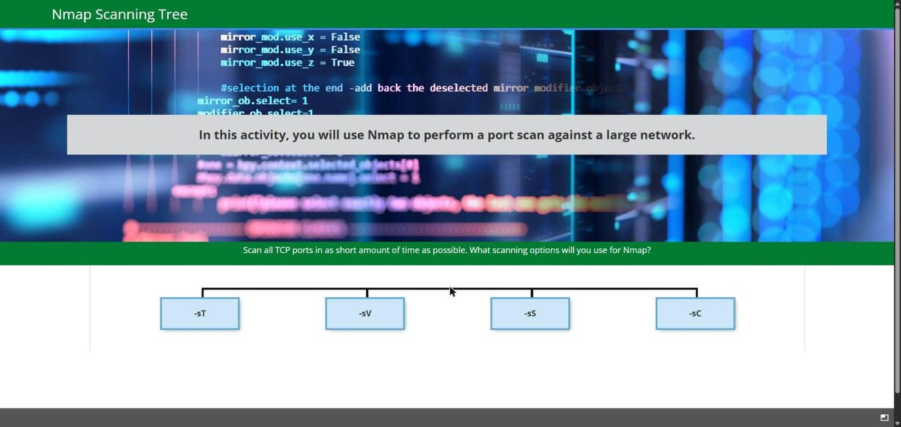
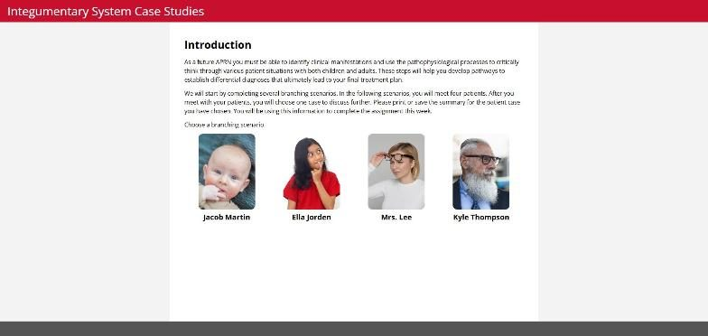
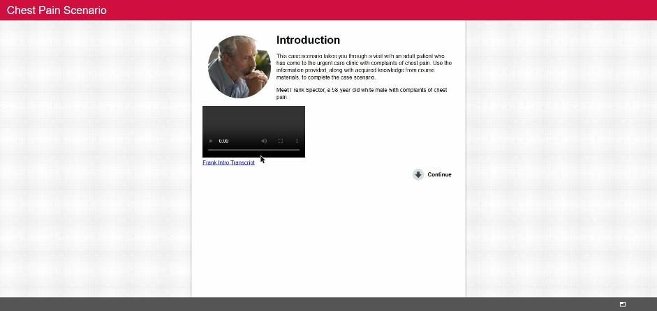
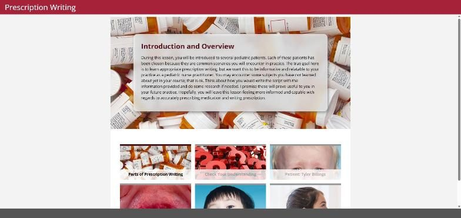
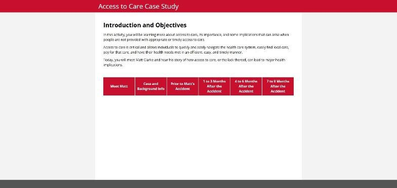
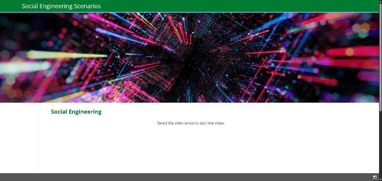
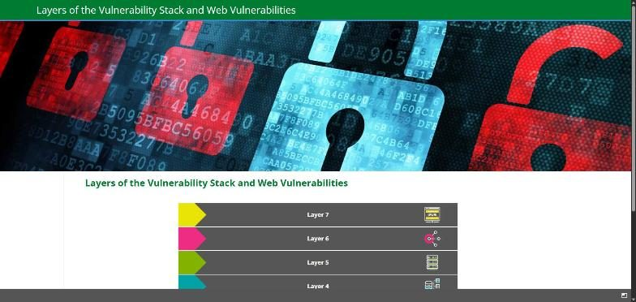
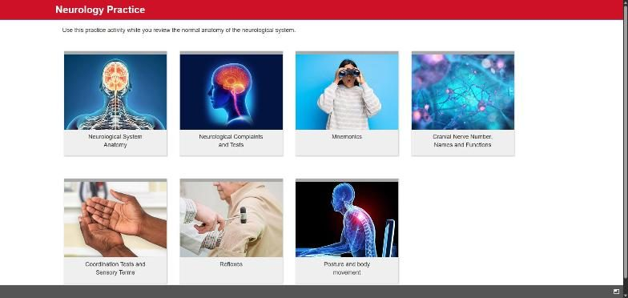

Work / Graduate Cybersecurity and Nursing Interactives
Graduate Cybersecurity and Nursing Interactives
Scenario-based practice for graduate students who need to make decisions, not memorize facts.
Graduate nursing and cybersecurity students learn by working cases: a patient with chest pain, a network that needs scanning. Reading about it is not the same as deciding what to do next.
At Pearson Online Learning Services I designed and built 30+ interactive modules for the Master of Science in Cyber Security at the University of North Dakota and the Master of Science in Nursing programs at Maryville University and Regis College. The formats match the thinking each field requires: branching decision trees for Nmap scanning options with feedback on every choice, patient case scenarios with video introductions and transcripts, anatomy practice hubs, and practical guides such as prescription writing and policy briefs.
Every module was built as a self-contained web module loaded into Canvas, with faculty subject matter experts, and course revisions were driven by LMS analytics and end-of-course evaluations term over term.
- Type
- Interactive eLearning for higher education
- Client
- Pearson Online Learning Services, for UND, Maryville, and Regis
- Date
- 2021 to 2023
- Tools
- HTML
- CSS
- JavaScript
- Canvas LMS
- Articulate 360
- Camtasia
- Skills
- Scenario design
- Branching logic
- Case study writing
- SME collaboration
- Accessibility (transcripts, keyboard navigation)
- LMS integration
The design process
Course map
Every course started with the faculty subject matter expert and me completing and aligning on the course map: outcomes, weekly topics, assessments, and where interactive practice was needed.
Lesson design document
Each week was planned in a lesson design document that placed readings, media, activities, and assessment against the week's objectives.
Storyboard and build
Each scenario and media piece was storyboarded screen by screen before build: on-screen text, choices, feedback, and where each choice leads. The Nmap Scanning Tree storyboard is reconstructed below from the shipped module.
The finished project
Eight of the modules, live. Each opens in a new tab.

Nmap Scanning Tree (UND). Four decisions in sequence, feedback on every option, no dead ends. 
Integumentary System Case Studies (Maryville). Four patients, a branching diagnosis path for each, and a printable summary. 
Chest Pain Scenario (Maryville). Video patient intro with transcript, then a stepped case. 
Prescription Writing (Regis). A multi-patient pediatric lesson with a check-your-understanding section. 
Access to Care Case Study (Maryville). One patient's story told across a timeline. 
Social Engineering Scenarios (UND). Video-based attack recognition. 
Layers of the Vulnerability Stack (UND). An interactive layered model. 
Neurology Practice (Maryville). A seven-topic practice hub with a printable study summary.
Reconstructed storyboard: Nmap Scanning Tree
The original design documents for these modules are not available, so this one was rebuilt from the shipped module. Every prompt, choice, and feedback line below is quoted from the live activity.
Scenario: scan all TCP ports on a large network in as short a time as possible. Four decisions in sequence. In rows 1 to 3 one option is best and the others return feedback and keep the student in the row. Row 4 has no wrong answer; the activity completes once all three flags are reviewed.
| Decision | Options | Best choice and why |
|---|---|---|
| 1. Scan type | -sT, -sV, -sS, -sC | -sS. "Syn scans, also known as stealth scans, take the shortest amount of time because they do not complete the three-way handshake." |
| 2. Port range | -p-, -F, (no flag), -p 1-1000 | -p-. "The -p- flag is shorthand for -p 1-65535. This flag tells Nmap to perform a scan on all TCP ports." |
| 3. Timing | -T0 through -T5 | -T4. Aggressive mode: fast without flooding a production network. -T5 "could flood the network with scanning traffic." |
| 4. Output and input | --open, -oA, -iL | All three are good practice; the student reviews each. |
Feedback design: every option names the mechanism (handshake, port count, wait time) and either confirms the choice or redirects with "Select another option." Wrong choices never end the activity.